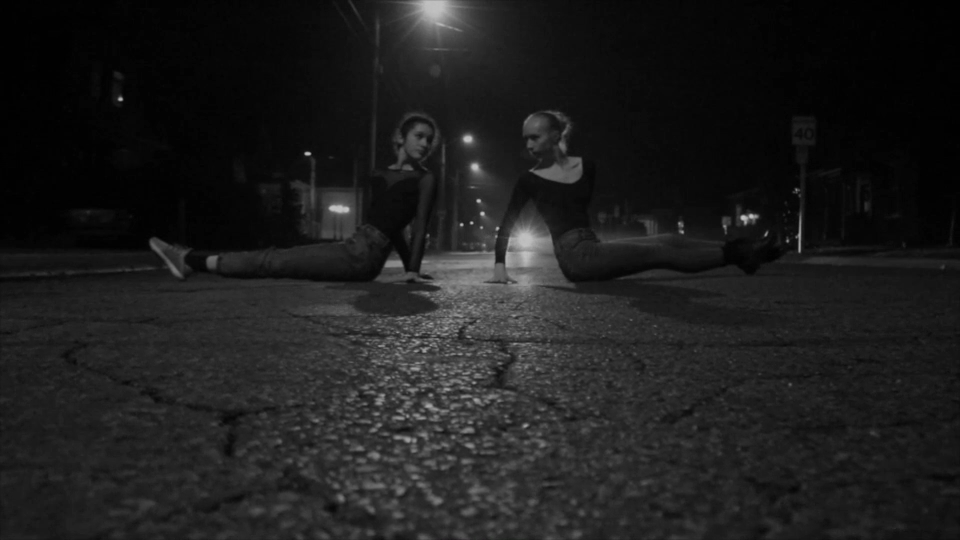

ballet @ Brown
(2020)
(2020)

CONCEPTUALIZATION | DIRECTION | PRODUCTION | FILMING | EDITING
A promotional film for the Brown Univeristy TAPS (Theatre Arts and Performance Studies) Department.
Featuring students from Patricia Seto-Weiss's ballet course.
Music: "Piano Concerto No.1 in G Minor, Op.25" by Felix Menelssohn
Performed by Brown University Orchestra, 2019. Director: Mark Seto.
A promotional film for the Brown Univeristy TAPS (Theatre Arts and Performance Studies) Department.
Featuring students from Patricia Seto-Weiss's ballet course.
Music: "Piano Concerto No.1 in G Minor, Op.25" by Felix Menelssohn
Performed by Brown University Orchestra, 2019. Director: Mark Seto.
mirrorshadow
(2019)
(2019)

CONCEPTUALIZATION | CHOREOGRAPHY | DIRECTION | PRODUCTION | FILMING | EDITING | SOUND
A film capturing contemporary choreography by yours truly.
Danced by Ania Yurkov and Laura Murariu.
Music: "Snapshot in LA" by Marion Cotillard, Joseph Mount, Villaine.
See inspiration for the choreography
A film capturing contemporary choreography by yours truly.
Danced by Ania Yurkov and Laura Murariu.
Music: "Snapshot in LA" by Marion Cotillard, Joseph Mount, Villaine.
See inspiration for the choreography